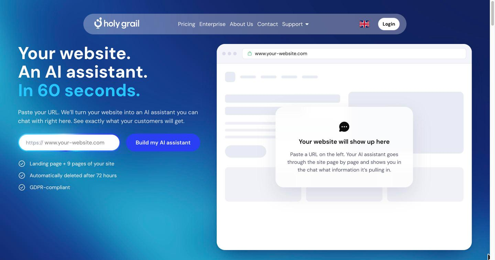

Animated hero background in WebGL
The designer had a reference video. I rebuilt it as a real-time shader: a slow, water-like ribbon of light made with simplex noise, fBm and domain warping, in the colours from the Figma file. I tuned the speed, flow and light until it matched.
It pauses when it's off-screen and respects reduced-motion settings, so the page stays fast and accessible.
- WebGL
- GLSL
- JavaScript
